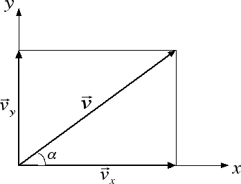

Forze e vettori
Scomposizione di vettori
Un'altra operazione importante per quelle che sono le applicazioni alla fisica è la scomposizione di vettori rispetto a due assi. Noi ci limiteremo in questa sezione alla scomposizione di un vettore rispetto a due assi perpendicolari tra loro, ad esempio i due assi cartesiani x e y. La scomposizione di un vettore è un po' l'operazione inversa rispetto alla somma: assegnato un vettore, si tratta di trovare due vettori, uno di direzione orizzontale e l'altro verticale, la cui somma riproduca il vettore di partenza. La procedura che dobbiamo seguire è quella della proiezione geometrica del vettore lungo gli assi: partendo dalla punta del vettore dobbiamo tracciare una linea orizzontale e una linea verticale come nella figura sottostante. Queste due linee intersecano gli assi cartesiani in due punti, che diventano le punte dei due vettori richiesti:

Applicando il teorema di Pitagora abbiamo che le intensità dei tre vettori v, vx e vy sono legate tra loro dalla relazione v2 = v2x + v2y. Se i due assi x e y non sono invece perpendicolari, possiamo ancora procedere con la proiezione geometrica del vettore lungo i due assi per trovarne le componenti vx e vy ma tali componenti non saranno più legate tra loro dal teorema di Pitagora.
Prima di passare agli esercizi, vogliamo ricordare come moltissime grandezze fisiche in natura sono grandezze vettoriali: oltre allo spostamento, sono dei vettori la velocità e l'accelerazione che incontreremo a più riprese durante queste lezioni. Come abbiamo già anticipato, le forze sono caratterizzate da una direzione (la retta d'azione della forza), da un verso, da un punto d'applicazione e dall'intensità misurata dal dinamometro. Pertanto anche le forze sono dei vettori. Esistono tuttavia anche delle grandezze fisiche caratterizzate solamente da un'intensità: tali grandezze sono dette grandezze scalari. Tipici esempi sono la massa di un corpo o la sua temperatura.